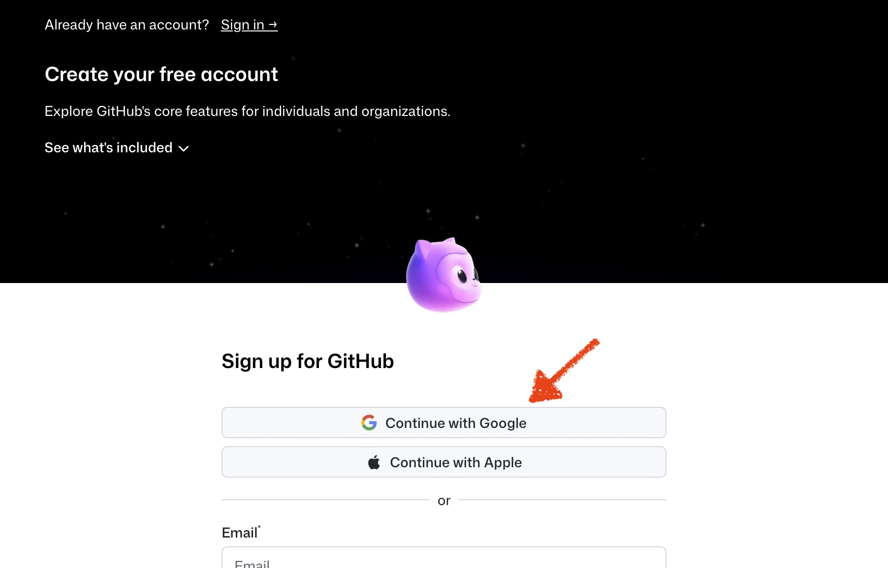
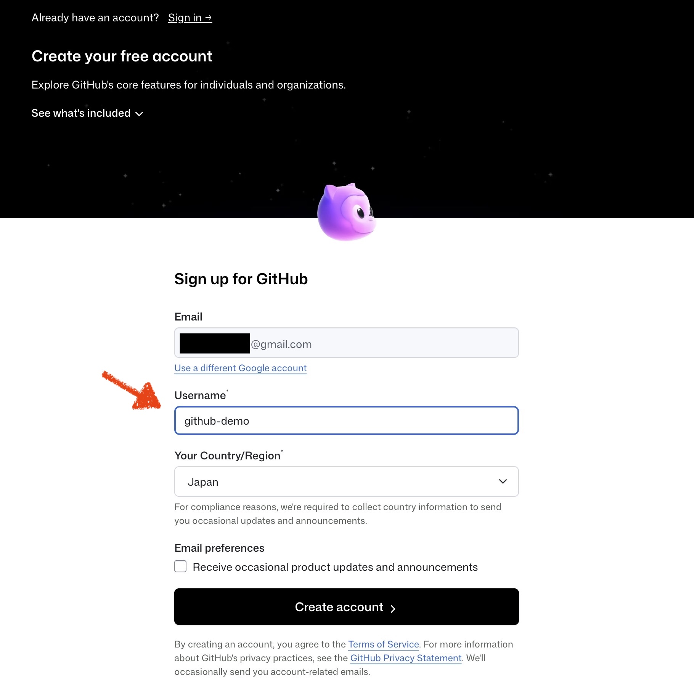
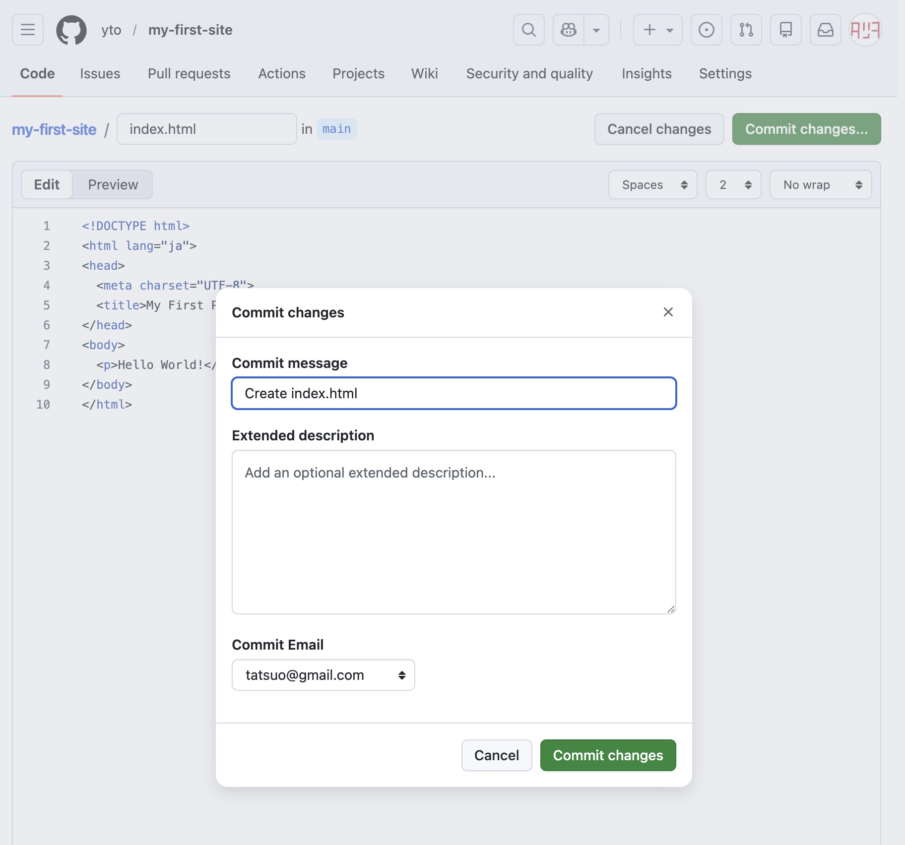
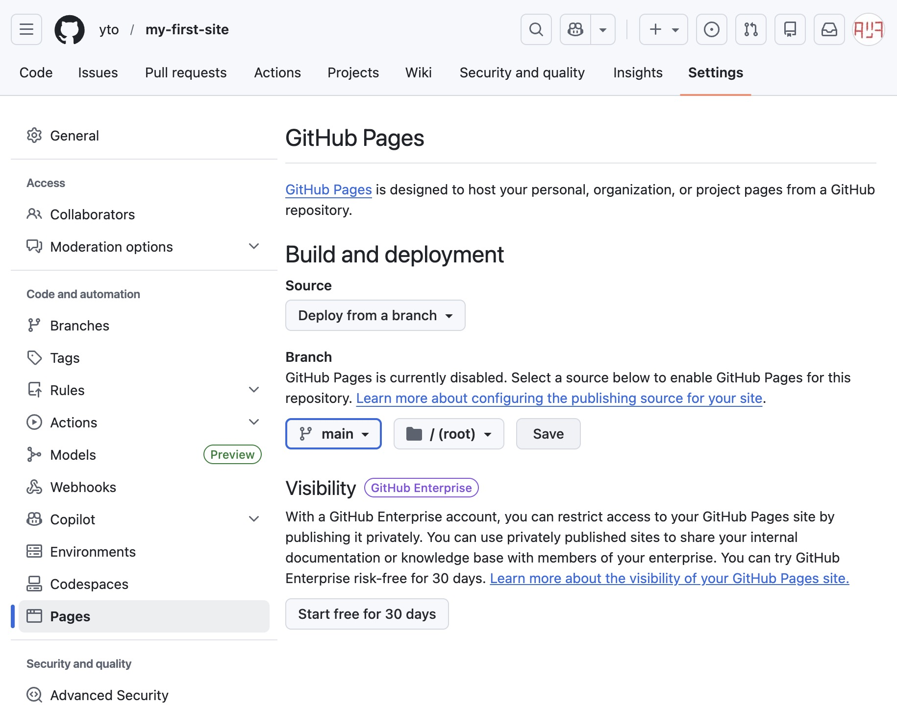
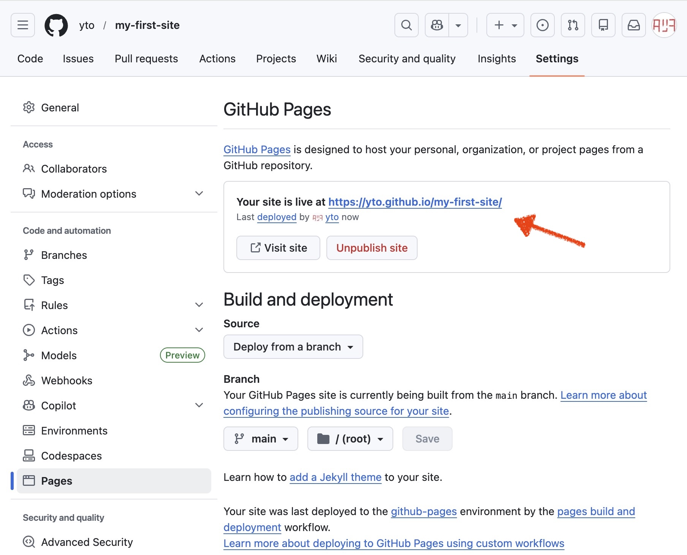
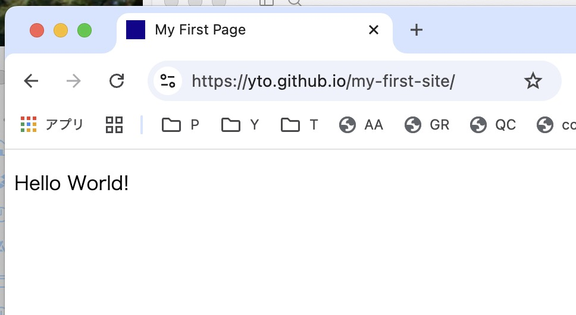

技術的に厳密でない部分もありますが、わかりやすさ優先で解説します。
対象はMac（MacBookなど）ユーザーで、Googleアカウントを持っていることを前提とします。
GitHubは「変更履歴ごと保存できるネット上のフォルダ」のようなもの。
Macのデスクトップに「確定申告」「旅行写真」「ブログネタ」など用途別フォルダを作るように、GitHub上でもタスクごとに専用フォルダ（= リポジトリ）を作って管理する。
よく混同されるが、GitとGitHubは別のもの。
Git はMacの中で動く変更管理ツール。ファイルの変更履歴をローカルで記録する仕組みで、インターネットがなくても使える。
GitHub はその記録を置いておくクラウドサービス。Gitで管理した履歴をネット上にアップロードして保存したり、他の人と共有したりできる。
「GitがツールでGitHubはサービス」という関係。Gitだけでも使えるが、GitHubと組み合わせることでバックアップや共同作業が可能になる。
GitとGitHubを使うとき、ファイルは2拠点で管理される。
ローカル（Mac） ←→ リモート（GitHub）
基本の流れは、ローカルで作業してリモートに送ること（push）。必要に応じてリモートの最新状態をローカルに取り込むこと（pull）もある。初回だけはリモートのリポジトリをMacに丸ごとコピーする操作（clone）から始める。
GitHubの中心にあるのは「変更の記録」という考え方。ファイルを変えるたびに「いつ・何を・どう変えたか」が蓄積されていく。
backup_20240401.zip のようにファイルを丸ごとコピーして取っておく管理と違い、どのバックアップが何の目的で作られたものか、何を変えた時点のものかが一目でわかる。
複数人が同じプロジェクトを触るとき、GitHubでは「誰が・いつ・何を変えたか」を把握しながら作業が進められる。ブランチ（作業用のコピー）を使って並行作業し、確認できたら本体に合流させる流れが基本。
一人で開発する場合でも、複数のPCを使用している状況で同じ仕組みが役立つ。常にローカルを最新状態にすれば、環境の違いを意識せずに作業が継続できる。
コードを書く人のためのツールというイメージが強いが、テキストを扱う作業全般に使われている。
「テキストベースのファイルであれば何でも」という感覚で使える。
GitHub Pages
リポジトリに置いた静的ファイル（HTMLファイルなど）をそのままWebサイトとして無料で公開できる機能。ポートフォリオ、ドキュメントサイト、静的なブログなどに広く使われている。
GitHub Actions
pushやmergeをきっかけに、自動でスクリプトを動かす仕組み。「変更をpushしたら自動でサイトをビルドしてデプロイ」「毎朝決まった時間に外部データを取得してリポジトリに保存」といったことができる。
この章はターミナル不要。ブラウザだけでアカウント登録、リポジトリの作成、ファイルの追加まで行う。
github.com にアクセスして Sign up for GitHub をクリック
Googleアカウントで登録する場合は Continue with Google を選択 
ユーザー名を設定して登録完了 
ユーザー名はURLに使われる（
github.com/ユーザー名）。後から変更できるが、外部に共有したURLが変わってしまうので最初から決めておくと良い。
ログイン後、右上の + ボタン → New repository をクリック。
| 項目 | 設定内容 |
|---|---|
Repository name |
my-first-site にしてください |
Description |
任意（空でもOK） |
Choose visibility |
初心者は基本的に Private（非公開） を選ぶ。GitHub Pages を使う場合は Public（公開） を選ぶ。あとから変更することも可能。詳しくは「リポジトリをPrivateにする」を参照 |
Add README |
チェックを入れる（リポジトリの概要を書くファイル。リポジトリのトップページに自動表示される） |
Create repository ボタンを押せばリポジトリ完成。
リポジトリのトップページで Add file → Create new file をクリック（画面幅が狭い場合は Add file の代わりに + と表示される）。
index.html と入力<!DOCTYPE html>
<html lang="ja">
<head>
<meta charset="UTF-8">
<title>My First Page</title>
</head>
<body>
<p>Hello World!</p>
</body>
</html>

リポジトリのトップページに index.html が表示されていれば完了。
ここからはMacのターミナルを使ってGitを操作する。ターミナルを開くには Command + Space → Terminal と入力。
まずGitが使える状態か確認する。
git --version
# git version 2.x.x と表示されればOK
入っていない場合は「command line developer tools」をインストールするか聞かれるので入れる（Xcode本体は不要で、Command Line ToolsだけでOK）。
初回だけ、自分の名前とメールアドレスを登録しておく（commitの記録に使われる）。名前とメールはGitHubのデータとして公開される（設定による）ので、本名でなくてもOK。メールは GitHub に登録済みのもの、または GitHub の noreply メールアドレス（コミットメールアドレスを設定する）を使う。
git config --global user.name "Your Name"
git config --global user.email "you@example.com"
GitHubへの認証にはSSHを使う。一度設定すれば、以降はパスワードなしで操作できる。
GitHub → 右上のアイコン → Settings → Emails
ここに表示されているメールアドレスを次のステップで使う。Google連携でGitHub登録した場合、GmailアドレスとGitHubに登録されているアドレスが異なる場合があるので必ず確認すること。
ssh-keygen -t ed25519 -C "確認したメールアドレス"
実行後は Enter を3回押すだけでOK。
pbcopy < ~/.ssh/id_ed25519.pub
GitHub → Settings → SSH and GPG keys → New SSH key
フォームが開くので以下を入力して Add SSH key をクリック。
| フィールド | 入力内容 |
|---|---|
Title |
このMacの識別名（例：MacBook Air）。何でもOK |
Key |
3でコピーした公開鍵をペースト |
ssh -T git@github.com
Hi ユーザー名! と表示されれば成功。
GitHubのリポジトリをMacに丸ごとコピー（クローン）する。最初の1回だけ行う。
GitHubのリポジトリページで Code ボタン → SSH タブに切り替えてURLをコピーして使う。
# 作業場所（フォルダ）を作成（例：デスクトップの "claude" フォルダ）
mkdir -p ~/Desktop/claude
# 作業場所に移動
cd ~/Desktop/claude
# リポジトリをクローン（↑でコピーしたURLを使う）
git clone git@github.com:ユーザー名/my-first-site.git
# クローンされたフォルダに移動
cd my-first-site
クローンが完了したら、ターミナルで ls コマンドを実行、またはFinderで デスクトップ → claude → my-first-site フォルダを開いてみよう。index.html などのファイルが入っていればクローン成功。GitHubにあったファイルがそのままMacに降りてきていることが確認できる。
mkdirはフォルダを作成するコマンド（-pオプションで途中のフォルダもまとめて作る）。cdはフォルダを移動するコマンド。lsは今いるフォルダのファイル一覧を表示するコマンド。ターミナルでの作業は「今どのフォルダにいるか」が重要で、現在地を確認するにはpwdコマンド。
デスクトップ → claude → my-first-site フォルダを開き、index.html をテキストエディタで開く<p>Hello World!</p> の文字を何か別のテキストに変えて保存するgit add index.html
git commit -m "index.htmlを更新"
git push -u origin main
index.html が更新されていることを確認する基本の開発フロー。ファイルを編集したら3ステップでGitHubに反映する。
ファイルを編集 → git add → git commit → git push
| コマンド | 意味 |
|---|---|
git add |
「これをセーブ対象にする」宣言。複数ファイルを変更していても、一部だけ選べる。 |
git commit |
「この状態をセーブする」。セーブポイントに名前をつけるイメージ。 |
git push |
セーブポイントをGitHubにアップロード。 |
commitはゲームのセーブポイントのようなもの。ゲームで「ここまで進んだら一度セーブしておこう」とするように、Gitでも「ここまでの変更をセーブポイントとして残しておく」のがcommit。セーブポイントに名前をつけておける（= コミットメッセージ）ので、後から「あの時点に戻りたい」というときに目印になる。
Git コマンドメモ:
# 状態確認（どのファイルが変更されているか確認できる）
git status
# 特定のファイルをセーブ対象に追加
git add index.html
# すべての変更ファイルをまとめて追加する場合
git add .
# コミット（メッセージは何を変えたかを書く）
git commit -m "トップページのレイアウトを修正"
# 初回だけこのコマンド（以降は git push だけでOKになる）
git push -u origin main
# 2回目以降
git push
git statusでいつでも「今どんな状態か」を確認できる。迷ったらまずこれを打つと良い。
Claude CodeやCodexなどのAIコーディングツールを使っている場合は、「GitHubにpushして」と依頼するだけでadd・commit・pushの一連の操作をやってもらえる。コマンドを覚えなくても使えるが、各コマンドが何をしているか知っておくと、トラブル時に状況を理解しやすい。
GitHubのWebサイト上で直接ファイルを編集することもできる。その変更をMac側に取り込むには：
git pull
cloneは「初回の丸ごとコピー」、pullは「すでにある状態で最新を取り込む」と使い分ける。
GitはMacのTerminal（コマンドライン）から操作するのが基本で、このガイドもTerminalを使って説明する。
「黒い画面が苦手」という場合、GUIアプリを使っても同じことができる。
| アプリ | 特徴 |
|---|---|
| GitHub Desktop | GitHubが公式提供する無料アプリ。シンプルで導入しやすい |
| VS Code | テキストエディタにGit操作が統合されている。コードを書きながらそのままcommit・pushできる |
| Sourcetree | 無料で多機能。ブランチの状態を視覚的に確認しやすい |
どのアプリを使っても裏側でやっていることは同じ。
1章で紹介したGitHub Pagesを実際に設定する。リポジトリの設定画面から数クリックで完了し、https://ユーザー名.github.io/リポジトリ名/ の形式でURLが発行される。
Branch を main、Folder を / (root) にして Save
Pages設定画面の上部にURLが表示される（  https://ユーザー名.github.io/my-first-site/）。反映まで数分かかるので、しばらく待ってからアクセスして確認する。
注意点：
index.html という名前のファイルが基本。ないと404エラーになるポートフォリオや静的なブログの公開によく使われる。
リポジトリをPublic（公開）にしていると、ファイルの中身や変更履歴は誰でも閲覧できる状態になる。 HTML + JavaScript + CSSだけのシンプルなアプリであれば大きな問題になることは少ないが、以下のようなケースではPrivate（非公開）への変更がおすすめ。
変更方法：リポジトリの Settings → Danger Zone（ページ下部） → Change repository visibility
ただし、GitHub Free（無料版）のPrivateリポジトリではGitHub Pagesは使えない。PrivateのままGitHub Pagesを使うにはGitHub Pro以上が必要。
無料のまま非公開で運用したい場合は、Cloudflare Pagesなど別のホスティングサービスが選択肢となる。
本番ファイルを直接触らず、コピーして作業してからOKなら合流させる仕組み。
main（本番・完成版）→ ブランチを作る（コピー）→ 作業・テスト → merge（合流）
main
├── feature ブランチ（新機能を試す）
└── fix ブランチ（バグ修正用）
GitHubでは、「このブランチの変更を main に取り込んでください」と依頼する仕組みを Pull Request（PR） と呼ぶ。PR を作って確認し、問題なければ merge（合流）する。
同じファイルを複数人（または複数Mac）が別々に編集してアップしようとすると、どちらを正とするか判断できなくなる。これがコンフリクト。
発生しやすいケース：
mergeのときに起きやすい。解決する仕組みはあるが、git pull を習慣づけてこまめに最新状態にしておくことで防ぎやすくなる。
「GitHubにアップしたくないファイル」を除外リストとして書いておくファイル。
対象の例：パスワード・APIキー / node_modules（大量の依存ファイル）/ .DS_Store（macOSが自動生成する不要ファイル）
# .gitignore ファイルをターミナルで作成する例
echo ".DS_Store" >> .gitignore
echo "node_modules/" >> .gitignore
うっかり秘密情報を公開してしまうのを防ぐ。プロジェクト作成時に設定しておくのが基本。
ただし、.gitignore は「まだGitで管理していないファイル」を除外するためのもの。すでに追加済みのファイルは別途対処が必要なので、最初に設定しておくと混乱しにくい。
macOSでは .DS_Store が頻繁に生成されるので、最初から除外しておくと良い。
2026-04-23 (last updated: 2026-05-03) タツヲ (yto)